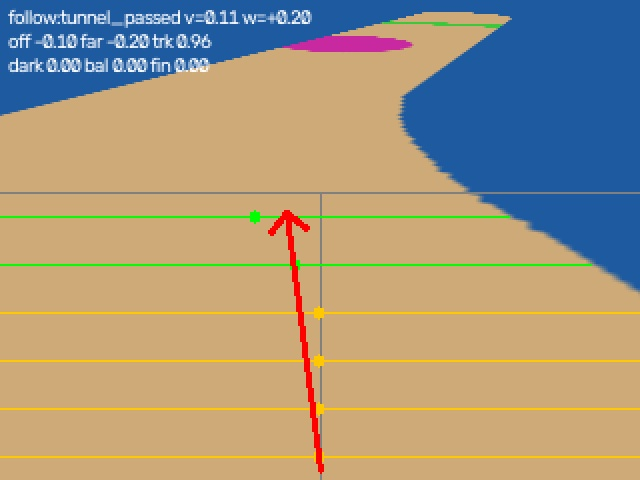

Гусеничный робот, который проходит полосу препятствий: сложные препятствия — под управлением оператора, участок после горки — сам, по картинке с камеры.
Трасса — деревянная полоса на синем полу, без бортиков. Автопилот отличает дерево от пола по цвету и держит робота посередине полосы. В туннеле и перед шаром он не «думает», а едет прямо заданное время. Если робот потерял полосу или пропала картинка — он останавливается и ждёт оператора.
«Мозг» и «мышцы» разделены. Raspberry Pi смотрит в камеру и решает, с какой скоростью ехать и куда поворачивать. ESP32 ничего не решает — она получает по Wi-Fi готовые команды 20 раз в секунду и подаёт напряжение на моторы. Если команды перестали приходить, ESP32 сама останавливает моторы. Прошивка ESP32 взята из набора курса BOTS и не менялась: Raspberry Pi говорит с ней на том же языке, что и веб-джойстик с телефона.
| Часть | Готовность | Чем подтверждено |
|---|---|---|
| Моторы, ESP32, веб-джойстик | работает | стенд: гусеницы крутятся с телефона |
| Управление с Raspberry Pi через ROS 2 | работает | стенд без гусеничных ремней: вперёд, поворот, аварийный стоп |
| Автопилот по камере, режимы, страничка оператора | написано | только симулятор и автотесты; настоящую трассу камера ещё не видела |
| Запуск на Raspberry Pi «от кнопки питания» | написано | образ собран и проверен на ПК, на Pi не ставился |
| Прошивка с быстрым остановом при обрыве связи | написано | не скомпилирована под ESP32 и не залита |
| Питание Pi на борту, гусеничные ремни, крепление камеры | нет | Pi пока питается от розетки |
| Заезд по трассе | нет | — |
Сплошные линии — провода, пунктир — Wi-Fi. Оранжевым отмечено то, чего на роботе пока нет.
| Сигнал драйвера | Вывод ESP32 | Зачем |
|---|---|---|
| AIN1 / AIN2 | 13 / 14 | направление мотора M1 |
| BIN1 / BIN2 | 12 / 27 | направление мотора M2 |
| PWMA / PWMB | 26 / 25 | скорость (ШИМ, 0–255) |
| STBY | 33 | включение драйвера |
| светодиод | 2 | индикация |
| Устройство | Адрес | Что на нём |
|---|---|---|
| ESP32 | 192.168.4.1 | веб-джойстик; приём команд (WebSocket /ws) |
| Raspberry Pi | 192.168.4.10 | страничка оператора, порт 8080 |
| Телефон | выдаёт ESP32 | браузер |
Интернета в этой сети нет. Точка доступа ESP32 держит до 4 устройств.
| № | Что делает оператор | Что происходит |
|---|---|---|
| 1 | Включает робота и Raspberry Pi | ESP32 поднимает сеть «bot5», Pi сама запускает программы (1–2 мин) |
| 2 | Телефон → «bot5», вкладки 192.168.4.1 и 192.168.4.10:8080 | джойстик и режимы; должно быть «ESP32: есть связь» |
| 3 | Ведёт джойстиком через яму и горку | режим MANUAL: Pi в управление не вмешивается |
| 4 | Ставит робота на полосу, нажимает AUTO | автопилот ведёт до финиша и останавливается |
| 5 | Что-то не так — СТОП или MANUAL | робот стоит, управление снова у джойстика |
Каждый блок — отдельная программа; между блоками — что они передают друг другу.
Зелёная рамка — программы на Raspberry Pi (ROS 2), серая — железо. Обратной связи от моторов нет: робот «знает», что едет правильно, только по картинке с камеры.
Автопилот выдаёт скорость в метрах в секунду и не знает про моторы. Узел управления знает ширину колеи и пределы, но не знает про Wi-Fi. Мост знает формат прошивки, но не знает, откуда команда. Поэтому камеру, алгоритм или способ связи можно менять по отдельности.
| Режим | Кто ведёт | Мост |
|---|---|---|
| MANUAL | оператор, веб-джойстик ESP32 | молчит, не мешает телефону |
| AUTO | автопилот на Raspberry Pi | передаёт команды |
Режим переключается кнопками на страничке оператора (её отдаёт Raspberry Pi, программа mode_node.py). Там же кнопка СТОП, состояние связи и картинка с камеры с пометками алгоритма. После включения робот всегда в MANUAL.
| Что случилось | Кто останавливает | Время |
|---|---|---|
| нажали СТОП | управление и мост | сразу |
| не видно полосы | автопилот | 0,6 с |
| нет кадров с камеры | автопилот | 0,4 с |
| автопилот завис | узел управления | 0,5 с |
| узел управления завис | мост | 0,5 с |
| ESP32 не отвечает | мост (разрыв связи) | 1,5 с |
| пропал Wi-Fi, упал мост | прошивка ESP32 | 3 с* |
* с подготовленной прошивкой — 0,5 с. Каждый следующий уровень страхует предыдущий: робот остановится, даже если «выше» всё зависло.
| Кто | Что получил | Что выдал |
|---|---|---|
| Зрение | кадр: полоса уходит вправо | смещение +0,3 |
| Автопилот | смещение +0,3 | вперёд 0,10 м/с, поворот вправо 0,36 рад/с |
| Узел управления | 0,10 м/с и −0,36 рад/с | левая гусеница 42 % мощности, правая 25 % |
| Мост | [0,42; 0,25] | {"x":21,"y":85} — «джойстик вперёд и чуть вправо» |
| ESP32 | {"x":21,"y":85} | левый мотор ШИМ 106 из 255, правый 64 — робот забирает вправо |
Числа посчитаны настоящим кодом с параметрами из susanin.yaml; сами параметры пока оценочные и калибруются на трассе.
Порядок препятствий известен заранее, поэтому на каждом шаге автопилот ждёт только одно следующее событие: сначала тёмный проём туннеля, потом пятно цвета шара, потом финиш (метка или конец полосы). Из любого шага он может уйти в состояние «потерялся» — стоит и ждёт, пока оператор заново нажмёт AUTO.
Как он рулит. Нижняя часть кадра режется на шесть горизонтальных лент. В каждой ищется самый широкий кусок «не пола». Середины этих кусков показывают, куда уходит полоса. Полоса правее центра — поворот вправо, и тем сильнее, чем больше смещение; в повороте скорость снижается.

Так алгоритм размечает кадр: линии — ленты, точки — середины полосы, стрелка — куда рулить. Это кадр симулятора, а не реальной трассы.
| Файл или папка | За что отвечает |
|---|---|
| ros2_ws/src/susanin_autopilot/vision.py | поиск полосы, туннеля, шара и финиша на кадре |
| …/susanin_autopilot/autopilot.py | шаги трассы и правила остановки |
| …/susanin_autopilot/mode_node.py | режимы MANUAL/AUTO, кнопка СТОП, страничка оператора |
| …/susanin_autopilot/sim.py | симулятор трассы для проверки без робота |
| ros2_ws/src/susanin_control/ | скорость → мощность гусениц, ограничения, плавный разгон |
| ros2_ws/src/susanin_esp32_bridge/ | связь с ESP32; fake_esp32.py — эмулятор прошивки для тестов |
| ros2_ws/src/susanin_bringup/config/susanin.yaml | все настройки робота в одном файле: цвета, скорости, адреса |
| …/susanin_bringup/launch/robot.launch.py | запуск всех программ одной командой |
| firmware/ | прошивка ESP32: исходная (на роботе) и с правками (не залита) |
| scripts/record_camera.py · vision_replay.py | снять запись с камеры; прогнать запись через алгоритм и посмотреть результат |
| docker/ · docs/DEPLOY_PI.md | установка на Raspberry Pi с автозапуском при включении |
| docs/ | инструкции, список испытаний, известные проблемы |
| на Raspberry Pi | docker compose -f docker/compose.yaml up -d |
| оператор | http://192.168.4.10:8080 |
| без робота | python scripts/vision_replay.py --demo |
1) бортовое питание Raspberry Pi и гусеничные ремни; 2) запись с трассы и настройка цветов по ней; 3) установка на Pi и проверка камеры; 4) прошивка с быстрым остановом; 5) заезды: подставка → прямая → поворот → туннель → шар.